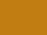
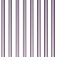

- java.lang.Object
-
- com.projetloki.genesis.image.Image
-
- All Implemented Interfaces:
- Hashable
public abstract class Image extends Object implements Hashable
An image maps every point of a rectangle to a color and an opacity. Since points are represented with floating point coordinates, no loss of information occurs when performing operations like resizing.Images are immutable. All the methods transforming an image, e.g.
crop(int, int, int, int), return a new image which is the result of the transformation and leave the original image unmodified.All methods return serializable images as long as
thisand the arguments are serializable.Example:
Image im = Images.canvas(80, 80, Color.PLUM_1) .fill(Color.PLUM_2, Gradients.linear(Direction.TOP)) .mask(Shapers.roundedBox(8), new Border(1, Color.PLUM_3, 0.5)) .pasteThat(TangoIcon.APPLICATIONS_MULTIMEDIA.toImage(32), 24, 24); Images.show(im);
- Author:
- Clément Roux
- See Also:
Images
-
-
Constructor Summary
Constructors Constructor and Description Image()
-
Method Summary
Methods Modifier and Type Method and Description ImageconcatX(Image rightIm)Returns the image obtained by pasting the given image to the right of this image.ImageconcatY(Image bottomIm)Returns the image obtained by pasting the given image at the bottom of this image.Imagecrop(int rectX, int rectY, int rectWidth, int rectHeight)Returns a rectangular region from this image.Imageerase(double rate)Returns the image obtained by erasing this image uniformly.Imageerase(Gradient grad)Returns the image obtained by erasing this image gradually.Imagefill(Color color, double alpha)Returns the image obtained by filling this image uniformly.Imagefill(Color color, Gradient grad)Returns the image obtained by filling this image gradually.ImageflipX()Returns the image obtained by flipping this image along the horizontal axis.ImageflipY()Returns the image obtained by flipping this image along the vertical axis.Imageframe(Color backgroundColor)Returns the image obtained by pasting this image on top of a monochromatic opaque image.Imageframe(Color backgroundColor, int topPadding, int rightPadding, int bottomPadding, int leftPadding)Returns the image obtained by pasting this image on top of a larger monochromatic opaque image.abstract doublegetAlpha(Point p)Returns the opacity (between 0 and 1) at the given point.abstract ColorgetColor(Point p)Returns the color at the given point.inthashCode()abstract intheight()Returns the height of the image.Imagemask(Shape shape)Returns the image obtained by making all the points lying outside the given shape transparent.Imagemask(Shape shape, Border... borders)Returns the image obtained by making all the points lying outside the given shape transparent and drawing borders around the shape.Imagemask(Shaper shaper)Returns the image obtained by making all the points lying outside the given shape transparent.Imagemask(Shaper shaper, Border... borders)Returns the image obtained by making all the points lying outside the given shape transparent and drawing borders around the shape.ImagepasteThat(Image that)Returns the image obtained by pasting that image on top of this image.ImagepasteThat(Image that, int destX, int destY)Returns the image obtained by pasting that image on top of this image, at the given position.ImagepasteThis(Image that)Returns the image obtained by pasting this image on top of that image.ImagepasteThis(Image that, int destX, int destY)Returns the image obtained by pasting this image on top of that image, at the given position.ImagerotateCcw()Returns the image obtained by rotating this image counterclockwise.ImagerotateCw()Returns the image obtained by rotating this image clockwise.Imagescale(int newWidth, int newHeight)Returns the image obtained by resizing this image.abstract intwidth()Returns the width of the image.
-
-
-
Method Detail
-
width
public abstract int width()
Returns the width of the image.
-
height
public abstract int height()
Returns the height of the image.
-
getColor
public abstract Color getColor(Point p)
Returns the color at the given point. The result of this method is undefined if the point is out of the image bounds. An exception may or may not be thrown.- Parameters:
p- a point in the image bounds
-
getAlpha
public abstract double getAlpha(Point p)
Returns the opacity (between 0 and 1) at the given point. 1 is for fully opaque, 0 is for transparent. The result of this method is undefined if the point is out of the image bounds. An exception may or may not be thrown.- Parameters:
p- a point in the image bounds
-
concatX
public Image concatX(Image rightIm)
Returns the image obtained by pasting the given image to the right of this image. The two images must have the same height.
im1im2im1.concatX(im2)- Parameters:
rightIm- the image to paste to the right of this image- Throws:
IllegalArgumentException- if the two images don't have the same height
-
concatY
public Image concatY(Image bottomIm)
Returns the image obtained by pasting the given image at the bottom of this image. The two images must have the same width.im1im2im1.concatY(im2)- Parameters:
bottomIm- the image to paste at the bottom of this image- Throws:
IllegalArgumentException- if the two images don't have the same width
-
flipX
public Image flipX()
Returns the image obtained by flipping this image along the horizontal axis.

imim.flipX()
-
flipY
public Image flipY()
Returns the image obtained by flipping this image along the vertical axis.
imim.flipY()
-
frame
public final Image frame(Color backgroundColor)
Returns the image obtained by pasting this image on top of a monochromatic opaque image. The return image is fully opaque.
imim.frame(CHOCOLATE_1)- Parameters:
backgroundColor- the color of the background image
-
frame
public Image frame(Color backgroundColor, int topPadding, int rightPadding, int bottomPadding, int leftPadding)
Returns the image obtained by pasting this image on top of a larger monochromatic opaque image. The return image is fully opaque.imim.frame(CHOCOLATE_1, 10, 20, 40, 10)- Parameters:
backgroundColor- the color of the background imagetopPadding- the height of the top border. Can be negative.rightPadding- the width of the right border. Can be negative.bottomPadding- the height of the bottom border. Can be negative.leftPadding- the width of the left border. Can be negative.- Throws:
IllegalArgumentException- if the new image has a negative width or height (in the case of negative padding)
-
crop
public Image crop(int rectX, int rectY, int rectWidth, int rectHeight)
Returns a rectangular region from this image.
imim.crop(10, 10, 60, 30)- Parameters:
rectX- the x-coordinate of the left side of the rectangle. Must be positive.rectY- the y-coordinate of the top side of the rectangle. Must be positive.rectWidth- the width of the rectangle. Must be positive.rectHeight- the height of the rectangle. Must be positive.- Throws:
IllegalArgumentException- ifrectX,rectY,rectWidthorrectHeightis negativeIndexOutOfBoundsException- ifrectX+rectWidth>getWidth(), orrectY+rectHeight>getHeight()
-
rotateCw
public Image rotateCw()
Returns the image obtained by rotating this image clockwise.

imim.rotateCw()
-
rotateCcw
public Image rotateCcw()
Returns the image obtained by rotating this image counterclockwise.imim.rotateCcw()
-
scale
public Image scale(int newWidth, int newHeight)
Returns the image obtained by resizing this image.
imim.scale(200, 100)- Parameters:
newWidth- the width of the new image. Must be positive.newHeight- the height of the new image. Must be positive.- Throws:
IllegalArgumentException- if the width or the height of the new image is negative
-
erase
public Image erase(double rate)
Returns the image obtained by erasing this image uniformly. The color stays unchanged, only the opacity decreases.imim.erase(0.75)- Parameters:
rate- the rate, between 0 and 1. 0 returns this image, 1 returns a transparent image.- Throws:
IllegalArgumentException- if the rate is not between 0 and 1
-
erase
public Image erase(Gradient grad)
Returns the image obtained by erasing this image gradually. The color stays unchanged, only the opacity decreases.imim.erase(Gradients.linear(BOTTOM))- Parameters:
grad- the gradient
-
fill
public Image fill(Color color, double alpha)
Returns the image obtained by filling this image uniformly. 
imim.fill(WHITE, 0.25)- Parameters:
color- the color to fill the image withalpha- the opacity of the new layer, between 0 and 1. 0 returns this image, 1 returns a monochromatic image.- Throws:
IllegalArgumentException- if the opacity is not between 0 and 1
-
fill
public Image fill(Color color, Gradient grad)
Returns the image obtained by filling this image gradually.imim.fill(CHOCOLATE_1, Gradients.circular(2, -0.5))- Parameters:
color- the color to fill the image withgrad- the gradient the gradient
-
pasteThat
public Image pasteThat(Image that, int destX, int destY)
Returns the image obtained by pasting that image on top of this image, at the given position.

im1im2im1.pasteThat(im2, 24, 24)- Parameters:
that- the image to paste on top of this imagedestX- the y-coordinate at which to paste that imagedestY- the y-coordinate at which to paste that image- See Also:
pasteThis(Image, int, int)
-
pasteThis
public final Image pasteThis(Image that, int destX, int destY)
Returns the image obtained by pasting this image on top of that image, at the given position.im1im2im1.pasteThis(im2, 24, 24)- Parameters:
that- the image to paste this image on top ofdestX- the x-coordinate at which to paste this imagedestY- the y-coordinate at which to paste this image- See Also:
pasteThat(Image, int, int)
-
pasteThat
public final Image pasteThat(Image that)
Returns the image obtained by pasting that image on top of this image. The two image must have the same size. 
im1im2im1.pasteThat(im2)- Parameters:
that- the image to paste on top of this image- Throws:
IllegalArgumentException- if the two images don't have the same size- See Also:
pasteThis(Image)
-
pasteThis
public final Image pasteThis(Image that)
Returns the image obtained by pasting this image on top of that image. The two images must have the same size.im1im2im1.pasteThis(im2)- Parameters:
that- the image to paste this image on top of- Throws:
IllegalArgumentException- if the two images don't have the same size- See Also:
pasteThat(Image)
-
mask
public Image mask(Shape shape)
Returns the image obtained by making all the points lying outside the given shape transparent.

imim.mask(Shapes.ellipse(10, 10, 60, 60))- Parameters:
shape- the shape- See Also:
mask(Shape, Border[])
-
mask
public Image mask(Shape shape, Border... borders)
Returns the image obtained by making all the points lying outside the given shape transparent and drawing borders around the shape.
imim.mask( Shapes.ellipse(10, 10, 60, 60), new Border(4, CHOCOLATE_3, 0.75), new Border(2, BLACK, 0.5))- Parameters:
shape- the shapeborders- the borders, from outside to inside- See Also:
mask(Shape)
-
mask
public final Image mask(Shaper shaper)
Returns the image obtained by making all the points lying outside the given shape transparent. The shape is generated by the shaper for the size of this image.

imim.mask(Shapers.roundedBox(8))- Parameters:
shaper- the shaper to generate the shape- See Also:
mask(Shaper, Border[])
-
mask
public final Image mask(Shaper shaper, Border... borders)
Returns the image obtained by making all the points lying outside the given shape transparent and drawing borders around the shape. The shape is generated by the shaper for the size of this image.
imim.mask( Shapers.roundedBox(8), new Border(1, ALUMINIUM_3, 0.75), new Border(1, ALUMINIUM_3, 0.25))- Parameters:
shaper- the shaper to generate the shapeborders- the borders, from outside to inside- See Also:
mask(Shaper)
-
-